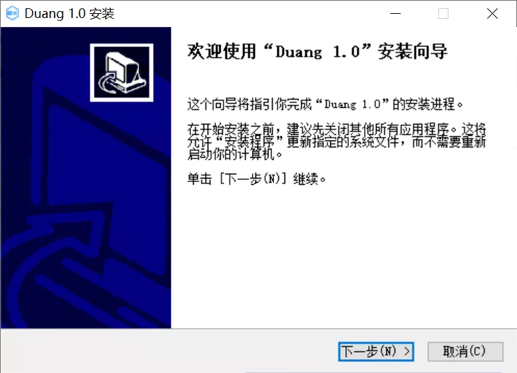

使用NSIS制作安装程序
本文最后更新于：2022年3月23日 晚上
一、简述
最近实习的过程中，要将 Python 编写的程序打包发布，最初了解到了 PyInstaller ，可以用于将 Python 代码打包为可执行程序，但是要么直接打包为单文件的可执行程序（运行慢），要么打包为一个包含可执行程序的文件夹（运行快），如果要发给别人使用的话只能将整个文件夹压缩后再发过去。
然后前些天搜索了一下了解到了制作安装程序的 NSIS ，本文将根据我的个人经历，简要介绍使用 NSIS 根据 PyInstaller 生成的含可执行程序的文件夹制作安装程序。
NSIS 官方网站：https://nsis.sourceforge.io/Main_Page
NSIS 中文论坛：https://www.nsisfans.com （内含国内开发者修改的集成增强版，可用于学习使用）
二、下载安装
下载地址：https://nsis.sourceforge.io/Download
如果刚接触的话可以使用上方中文论坛中提供的集成增强版，需要的东西都已经安装好了直接用就可以，而且其内置了 VNISEdit 可以使用向导很方便的创建 nsi 脚本，但注意通过向导生成的脚本比较简略，也可能存在一些比较细节的问题，所以一般后续还需要手动进行一些修改。
官方版仅支持编译，需要手动编写好脚本后导入进行编译。
当前 NSIS 的官方最新版本是 3.06.1 ，一般安装最新版即可。
安装过程很简单，只需要选择合适的安装路径（默认为 C:\Program Files (x86)\NSIS），其它一般默认即可。
三、使用 VNISEdit 向导生成脚本
其实这个 VNISEdit 官方版本叫 HM NIS EDIT ，这个 VNISEdit 应该是国内开发者修改过的版本。
HM NIS EDIT 官方网站：http://hmne.sourceforge.net
如果 NSIS 是安装的官方版本，那么如果要使用 HM NIS EDIT 就需要额外下载安装，如果是使用国内开发者修改过的集成安装版则均已安装好了，直接运行即可。
这里我以集成增强版为例进行简要说明，官方版本差别并不大，不同版本功能有细微的差别也不用太在意，VNISEdit 仅仅是用来帮助创建 nsi 脚本，如前面所说，生成的脚本一般都是需要后续手动修改的。
（1）继承增强版程序主界面如下图所示，这个界面其实是一个主菜单，第一个 MakeNSISW 是编译工具，向其中导入编写好的脚本就可以编译生成安装程序，第二个 HM VNISEdit 就是现在要介绍的帮助创建 nsi 脚本的程序，第三个 NotePad2 是一个文本编辑器。
（2）打开 HM VNISEdit ，界面如下，这个软件主要是用来编写 nsi 脚本的，但也集成了编译的功能。
（3）点击左上角“文件”，可以看到多种创建脚本的方法，这里我们使用向导进行创建，因为只需要一步一步按照向导的提示设置相关项即可，傻瓜式操作，对新手很友好🤣
（4）一般需要设置程序名和版本号，其它信息如果不需要的话选中删除即可，下一步。
（5）设置【安装程序的图标】，注意并不是【程序的图标】，设置安装程序的名字，默认为 Setup.exe ，虽然可以但是建议改一下，之前在某个地方有看到说这个名字系统有可能报错。其它项一般不需要设置，感兴趣自行查阅相关资料。
（6）呃，这一页，算了，下一步，花里胡哨……
（7）设置默认的安装目录，$PROGRAMFILES 指系统的默认程序安装文件夹（一般不需要修改，但需要注意程序运行可能需要管理员权限），一般为 C:\Program Files (x86) ，具体运行的时候会自动检测；下面的授权文件如果没有的话删掉编辑框中内容即可。下一步。
（8）删除下图的默认的两行，这里假设程序已经打包到一个文件夹里，点击 “AddDirTree” 按钮直接添加整个程序文件夹。
（9）选择程序的目录，以我的 D:\mxy\Desktop\Duang 为例，选择后会自动加上 *.* ，指添加该路径下的所有文件；目的目录保持默认的 $INSTDIR ，即程序的安装目录，取决于用户安装程序时选择的安装位置，如果不修改则为第（7）步默认的 C:\Program Files (x86)\Duang ；注意勾选左下方的“包含子目录”项。其它按需自行修改，确定。
（10）建议点击 “添加文件” 按钮将程序的可执行文件单独添加到列表中，后一步会有用到，添加后的结构如下图所示。下一步。
（11）上一步如果没有单独添加可执行程序的话，这一步就不会有下图框中的两项，当然应该也可以自行添加，只是相对麻烦一些。参考下图的设置，安装程序会在开始菜单中创建一个名叫 “Duang” 的文件夹，然后在这个文件夹中创建程序的快捷方式以及卸载程序的快捷方式，还会创建一个桌面快捷方式。下一步。
（12）设置程序安装完后要做什么，下图为安装完后启动应用程序。下一步。
（13）关于卸载程序的一些设置，自行设置后下一步。
（14）建议保存脚本并转换文件路径到相对路径，方便重复使用该脚本。完成。
（15）此时可以看到 HM VNISEdit 的主界面已经加载了根据刚才的设置生成的脚本，看不懂，先不管脚本了，傻瓜式的点击菜单栏的 “NSIS” ，然后 “编译并运行” 即可。
（16）这时候耐心等待就好了，生成的安装程序会存放在上一步保存的脚本文件所在的目录下。
（17）这就不需要教了ᓚᘏᗢ

四、自定义 NSIS 脚本
显然前面向导生成的脚本可以自定义的地方是有限的，而且实际操作中可能还有些问题，例如我遇到的卸载程序不能将程序完全卸载掉的问题，所有这些问题都可以通过修改脚本文件来解决。
注意：特别需要注意以下 NSIS 脚本的编码问题，好像是官方版本不支持 Unicode 编码，反正我个人使用官方 NSIS 3.06.1 过程中 GBK 编码没有问题，UTF-8 编码会报错，但 UTF-8 with BOM 是可用的。
（1）使用 VScode 编辑脚本
这里首先推荐使用 VScode 编辑脚本，因为 VScode 有 NSIS 的插件可以高亮显示代码，甚至简单配置了 NSIS 编译器路径后还可以直接在 VScode 中一键编译，非常方便。
简单介绍一下吧，NSIS 插件自行搜索安装就好了，安装好后配置 NSIS 插件。
主要需要配置 NSIS 编译器的路径，如图所示。
NSIS 安装目录下的 makensis.exe 即 NSIS 编译器。
完毕后打开先前生成的脚本文件看看，真香 :-) 脚本编辑完毕后，点击右上角按钮即可编译生成安装程序。
（2）正儿八经的编写脚本
以我的脚本为例来一步一步说，也就是前面向导生成的没有修改过的脚本。
a. ; 为 NSIS 脚本的注释符，用法类似 C++ 的 // 或者 Python 的 # ，!define 用于定义常量，后接自定义的常量名和该常量的值。强烈建议将各种自定义的量在脚本的开头定义为常量，后续使用常量即可，这么做的目的是程序升级时方便简单修改一些常量的值即可重复使用该脚本。常量的使用如下方代码第 7 行所示即 ${变量名} 即可。
; 安装程序初始定义常量
!define PRODUCT_NAME "Duang" ; 程序名
!define PRODUCT_VERSION "1.0" ; 版本号
!define PRODUCT_PUBLISHER "mxy" ; 作者
!define PRODUCT_PATH "D:\mxy\Desktop\Duang" ; 新增定义源程序路径
!define PRODUCT_WEB_SITE "https://mxy.cool" ; 网址
!define PRODUCT_DIR_REGKEY "Software\Microsoft\Windows\CurrentVersion\App Paths\Duang.exe" ; 注册表相关
!define PRODUCT_UNINST_KEY "Software\Microsoft\Windows\CurrentVersion\Uninstall\${PRODUCT_NAME}"
!define PRODUCT_UNINST_ROOT_KEY "HKLM"b. 使用的压缩算法，按需修改即可
SetCompressor lzmac. MUI 界面相关的一些东西，进阶操作请查阅官方文档。
; ------ MUI 现代界面定义 ------
!include "MUI.nsh" ; 当前已经新出了MUI2，自行了解
; MUI 预定义常量
!define MUI_ABORTWARNING
!define MUI_ICON "${PRODUCT_PATH}\img\mh64.ico" ; 安装程序的图标
; !define MUI_UNICON "${NSISDIR}\Contrib\Graphics\Icons\modern-uninstall.ico" ; 卸载程序的图标
!define MUI_UNICON "${MUI_ICON}" ; 修改为使用安装程序一样的图标
; 欢迎页面
!insertmacro MUI_PAGE_WELCOME
; 安装目录选择页面
!insertmacro MUI_PAGE_DIRECTORY
; 安装过程页面
!insertmacro MUI_PAGE_INSTFILES
; 安装完成页面
; !define MUI_FINISHPAGE_RUN "$INSTDIR\Duang.exe" ; 安装结束后运行程序
!define MUI_FINISHPAGE_RUN "$INSTDIR\${PRODUCT_NAME}.exe" ; 修改为引用常量
!insertmacro MUI_PAGE_FINISH
; 安装卸载过程页面
!insertmacro MUI_UNPAGE_INSTFILES
; 安装界面包含的语言设置
!insertmacro MUI_LANGUAGE "SimpChinese"
; 安装预释放文件
!insertmacro MUI_RESERVEFILE_INSTALLOPTIONS
; ------ MUI 现代界面定义结束 ------d. 一些设置项。
Name "${PRODUCT_NAME} ${PRODUCT_VERSION}"
; OutFile "DuangSetup.exe"
OutFile "${PRODUCT_NAME}Setup.exe" ; 修改为引用常量
; InstallDir "$PROGRAMFILES\Duang"
InstallDir "$PROGRAMFILES\${PRODUCT_NAME}" ; 修改为引用常量
InstallDirRegKey HKLM "${PRODUCT_UNINST_KEY}" "UninstallString"
ShowInstDetails show ; 显示安装细节
ShowUnInstDetails show ; 显示卸载细节
; BrandingText "Duang" ; 安装程序的下方的一段文字
BrandingText "${PRODUCT_NAME}" ; 修改为引用常量e. 创建快捷方式，已默认修改为引用常量。
Section "MainSection" SEC01
SetOutPath "$INSTDIR"
SetOverwrite ifnewer ; 更新覆盖
File /r "*.*" ; 路径下的所有文件
CreateDirectory "$SMPROGRAMS\${PRODUCT_NAME}" ; 创建开始菜单目录并命名为程序名
; 在上一行创建的开始菜单目录下创建程序快捷方式
CreateShortCut "$SMPROGRAMS\${PRODUCT_NAME}\${PRODUCT_NAME}.lnk" "$INSTDIR\${PRODUCT_NAME}.exe"
CreateShortCut "$DESKTOP\${PRODUCT_NAME}.lnk" "$INSTDIR\${PRODUCT_NAME}.exe" ; 创建桌面快捷方式
File "${PRODUCT_PATH}\${PRODUCT_NAME}.exe" ; 源可执行程序的路径
SectionEndf. 写注册表相关的设置，已默认修改为引用常量。
Section -Post
WriteUninstaller "$INSTDIR\uninst.exe" ; 写入卸载程序
WriteRegStr HKLM "${PRODUCT_DIR_REGKEY}" "" "$INSTDIR\${PRODUCT_NAME}.exe"
WriteRegStr ${PRODUCT_UNINST_ROOT_KEY} "${PRODUCT_UNINST_KEY}" "DisplayName" "$(^Name)"
WriteRegStr ${PRODUCT_UNINST_ROOT_KEY} "${PRODUCT_UNINST_KEY}" "UninstallString" "$INSTDIR\uninst.exe"
WriteRegStr ${PRODUCT_UNINST_ROOT_KEY} "${PRODUCT_UNINST_KEY}" "DisplayIcon" "$INSTDIR\${PRODUCT_NAME}.exe"
WriteRegStr ${PRODUCT_UNINST_ROOT_KEY} "${PRODUCT_UNINST_KEY}" "DisplayVersion" "${PRODUCT_VERSION}"
WriteRegStr ${PRODUCT_UNINST_ROOT_KEY} "${PRODUCT_UNINST_KEY}" "URLInfoAbout" "${PRODUCT_WEB_SITE}"
WriteRegStr ${PRODUCT_UNINST_ROOT_KEY} "${PRODUCT_UNINST_KEY}" "Publisher" "${PRODUCT_PUBLISHER}"
SectionEndg. 创建网站快捷方式和卸载程序快捷方式。
Section -AdditionalIcons
WriteIniStr "$INSTDIR\${PRODUCT_NAME}.url" "InternetShortcut" "URL" "${PRODUCT_WEB_SITE}"
CreateShortCut "$SMPROGRAMS\Duang\Website.lnk" "$INSTDIR\${PRODUCT_NAME}.url"
CreateShortCut "$SMPROGRAMS\Duang\Uninstall.lnk" "$INSTDIR\uninst.exe"
SectionEndh. 卸载程序相关的设置，已默认修改为引用常量。
Section Uninstall
; 删除快捷方式
Delete "$SMPROGRAMS\${PRODUCT_NAME}\Uninstall.lnk"
Delete "$SMPROGRAMS\${PRODUCT_NAME}\Website.lnk"
Delete "$DESKTOP\${PRODUCT_NAME}.lnk"
Delete "$SMPROGRAMS\${PRODUCT_NAME}\${PRODUCT_NAME}.lnk"
; 删除开始菜单文件夹
RMDir "$SMPROGRAMS\${PRODUCT_NAME}"
; Delete "$INSTDIR\${PRODUCT_NAME}.url"
; Delete "$INSTDIR\uninst.exe"
; Delete "$INSTDIR\${PRODUCT_NAME}.exe"
; RMDir /r "$INSTDIR\tk"
; RMDir /r "$INSTDIR\tcl"
; RMDir /r "$INSTDIR\lib2to3"
; RMDir /r "$INSTDIR\Include"
; RMDir /r "$INSTDIR\img"
; RMDir "$INSTDIR"
RMDir /r "$INSTDIR" ; 直接删除整个文件夹，前面所说的卸载不干净的问题就是这里造成的
; 删除注册表信息
DeleteRegKey ${PRODUCT_UNINST_ROOT_KEY} "${PRODUCT_UNINST_KEY}"
DeleteRegKey HKLM "${PRODUCT_DIR_REGKEY}"
SetAutoClose true ; 卸载完毕自动关闭窗口
SectionEndi. 执行卸载程序的两个函数
; 卸载程序启动时执行
Function un.onInit
MessageBox MB_ICONQUESTION|MB_YESNO|MB_DEFBUTTON2 "您确实要完全移除 $(^Name) ，及其所有的组件？" IDYES +2
Abort
FunctionEnd
; 卸载成功时执行
Function un.onUninstSuccess
HideWindow
MessageBox MB_ICONINFORMATION|MB_OK "$(^Name) 已成功地从您的计算机移除。"
FunctionEnd（3）编译试试
如果编译成功将看到输出结构如下的信息。编译生成的安装程序将和脚本文件存放在一起，可以安装测试一下功能是否正常。
如果编译失败，会输出具体哪一行出现了错误，容易出错的地方就是路径问题，并不复杂，稍微细心一点就好了。
五、进阶操作
进阶操作我也不会什么了，建议查阅 NSIS 官方文档：https://nsis.sourceforge.io/Docs
关于安装程序的界面的设置需要查阅 MUI 的相关文档：https://nsis.sourceforge.io/Docs/Modern UI 2/Readme.html
例如，以下两项分别可以设置安装程序欢迎界面的图片和文字。
; Bitmap for the Welcome page and the Finish page (recommended size: 164x314 pixels).
; Default: ${NSISDIR}\Contrib\Graphics\Wizard\win.bmp
MUI_WELCOMEFINISHPAGE_BITMAP bmp_file
; Text to display on the page.
MUI_WELCOMEPAGE_TEXT text六、在 Python 中编译
（1）在 Python 中编译
其实在 Python 中编译本质上就是调用 NSIS 编译程序 “makensis.exe” 。
首先要做的时将 NSIS 编译器所在的目录添加到系统环境变量，如图所示。
环境变量设置好后可以在命令行中输入命令 makensis 测试一下，如果输出如下信息，则说明配置成功了。
在 Python 中使用就很简单了，直接上代码：
import subprocess
# 使用NSIS制作安装包，等同于在命令行中执行 'makensis radar.nsi'
p2 = subprocess.Popen('makensis radar.nsi', shell=True, encoding="utf-8") # pyinstaller 打包
p2.communicate()（2）高端操作
其实在单纯在 Python 中调用编译器并没有省多少事，但真正的目的是配合 PyInstaller 一键更新 spec 文件和 NSIS 脚本，然后自动打包并制作安装程序，你就说它香不香🤣
关于 PyInstaller 打包 Python 应用程序可以参考我的另一篇文章：使用PyInstaller打包Python应用程序
最后附上 全自动操作的代码框架：
import subprocess
def run():
clean()
# 更新 spec 文件
update_spec()
# 更新 NSIS 脚本
update_nsis()
# PyInstaller 打包
p1 = subprocess.Popen('pyinstaller radar.spec --clean', shell=True, encoding="utf-8")
p1.communicate()
# 使用NSIS制作安装包
p2 = subprocess.Popen('makensis radar.nsi', shell=True, encoding="utf-8")
p2.communicate()试想一下你的程序每次更新仅需要更改版本号或者修改一下路径，然后剩下的工作全都自动化完成那得多舒服😋
七、结语
嗯，全篇完结，真难搞，写这篇文章足足花了一整晚🤣
不过这次关于 PyInstaller 和 NSIS 的探索体验可以说是非常的舒服了φ(゜▽゜*)♪